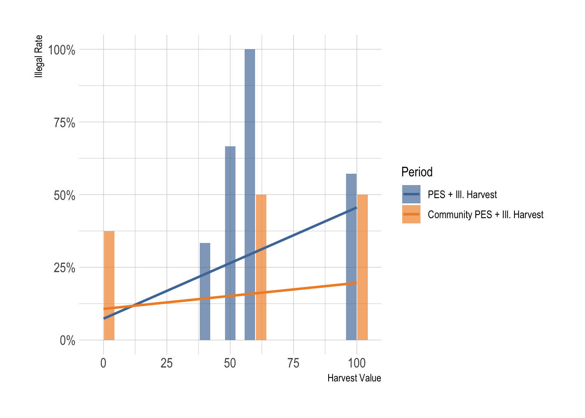
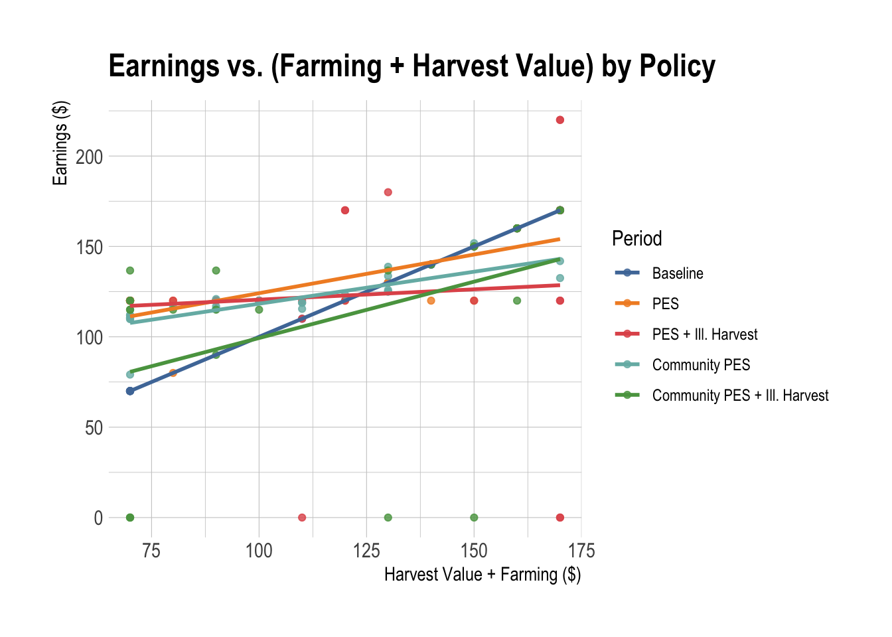
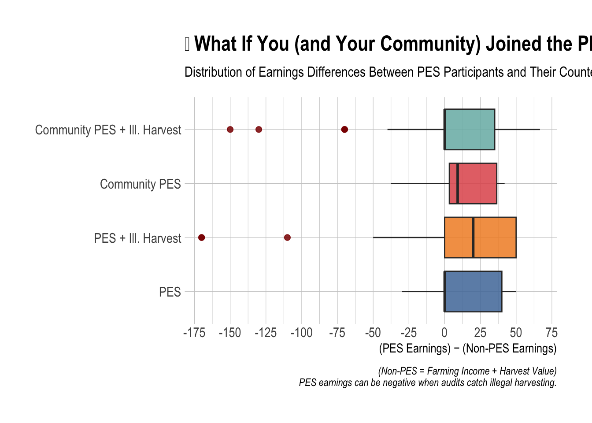

ECON 340 — Money Growing on Trees (REDD+ PES Experiment)
Class Experiment Analysis • 2025-10-06 • Instructor: Byeong-Hak Choe
Experiment Metadata
- Course: ECON 340-01
- Experiment date: 2025-10-06
- Instructor: Byeong-Hak Choe
Data Ingest
Transformations by Contract Period
We compute earnings using the rules defined for each period.
(Recall: Earnings = Farming Income + PES Payments + Harvest − Fines/Policing.)
CP0 — Baseline (no PES)
CP1 — PES (legal PES only)
CP2 — PES + Illegal Harvest (audit risk)
If audited and cheating: lose PES (50), lose illegal harvest, pay $70 fine.
CP3 — Community PES (split rules)
Each community that joins PES has a total of $50 × (# members) to divide by the chosen split rule.
CP4 — Community PES + Illegal Harvest (policing & audit)
Two randomizations (v1, v2) illustrate different audit outcomes.
Bind & Label
Visualizations (with brief takeaways)
Illegal Harvest vs. Card Value (CP2 & CP4)
Higher card values imply higher opportunity cost of conserving, so illegal rates often rise with card value—especially when not policed.
Earnings vs. Harvest Value (all periods)
Lines tilt up because more valuable cards boost the outside option (harvest), while PES flattens that slope.

“What if you joined PES?” — Earnings Differences
Right of zero = PES helped vs. your non-PES counterfactual.
Left of zero = PES hurt, often due to audits of illegal harvest.

Summary (interactive tables)
Below, click column headers to sort; use the search boxes to filter.
Community-level Summary (CP3–CP4)
What to look for: Which communities joined PES more? Did policing correlate with higher average earnings?
Split Rule Preferences
What to look for: Did groups favor equal, proportional, or floor + top-up rules?
Top & Bottom Earners (Total across all periods)
What to look for: Do high-card players dominate, or do PES/policing strategies change the leaderboard?
Lottery (2 randomly selected students)
Real payout = Total experimental earnings / 100 (per winner).
Notes on Interpretation
- Additionality: PES is additional only if it changes behavior relative to the non-PES baseline.
- Verifiability/Audits: Illegal harvesting under PES can erase benefits (and trigger fines).
- Community governance: Policing can deter cheating but costs resources; splitting rules shape perceptions of fairness and incentives.
- Who benefits? High-card players often prefer harvesting; needs-based or floor-plus rules can shift surplus toward low-card members.